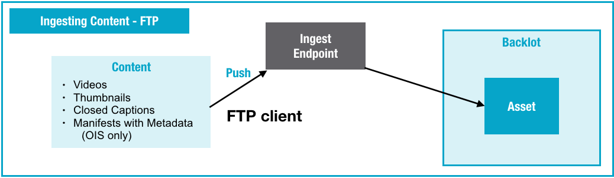

You can use FTPS (recommended) or FTP (deprecated) to upload videos, thumbnails, closed
captions, and manifest files to Backlot.
Note: This topic applies to both OIS v2.5 and OIS v1. Certain sections, where
indicated, apply to just one version. OIS v1 has been
disabled. Customers using OIS v1 should switch to OIS v2.5.
Overview of FTP Ingest

About FTP / FTPS
FTP is a standard network protocol for transferring files
from one computer to another. For OIS v2.5, FTPS (FTP over SSL) is required. FTP is used for
OIS v1, which is deprecated.
Most operating systems support FTP natively, and you can choose from many FTP client
applications. You can automate FTP uploads by writing scripts, have users bulk upload videos
through a Windows, Mac, or Linux application, or have users bulk upload videos through a
browser (e.g., FireFTP).
Note: You can use any FTP client to upload videos to
Backlot.
Account Policy
Your account is limited to a maximum of 100GB on the
ingestion server at any time. If you expect to upload more content, you can request a
temporary increase from your Customer Success Manager or Technical Support.
Getting Ingest Credentials
You need to obtain ingest credentials in order
to upload files to Ooyala via FTP.
Setting Up an Upload-only User in Backlot (OIS
v2.5)
Note: If you want to use both basic and manifest-based ingestion, you need to create separate, uniquely-named, upload-only user accounts for each (for example, user1_basic@example.com and user1_manifest@example.com).
- In the Backlot GUI (Account > User Management), add a user with Upload Only permissions
to your account (see Managing Users).
- Configure the password for this account.
- Use the email and password associated with this user to log into the ingestion endpoint
(see Ooyala Ingest Server Endpoints).
Note: If you want to use manifest-based ingest, contact Ooyala to enable this
functionality for your account.
Ingesting with an FTP / FTPS Client
You can upload a video via FTP / FTPS
either with or without a manifest.
Uploading Your File(s) via FTPS (OIS v2.5)
Note: OIS v2.5 requires an FTPS
client.
- Prepare the file(s) you want to upload.
- Launch your FTPS client program.
- Log into the ingest endpoint (see Ooyala Ingest Server Endpoints)
using the credentials (email and password) of your Backlot upload-only user account.
- Upload the file(s) you want to ingest (videos, thumbnails, closed caption files, and so
on). If you are using a manifest file, be sure to upload all of the files that are
referenced in the manifest file.
- Ooyala suggests that you upload the manifest file last.
Files are deleted right after they are all processed. Submitted files that do not go
through the entire ingestion workflow (for example, awaiting the upload of the manifest file)
are deleted from the server after 7 days.
Note: Special characters(non-ASCII) in file names
are not supported when files are ingested via FTP and manifest based ingestion is
used.